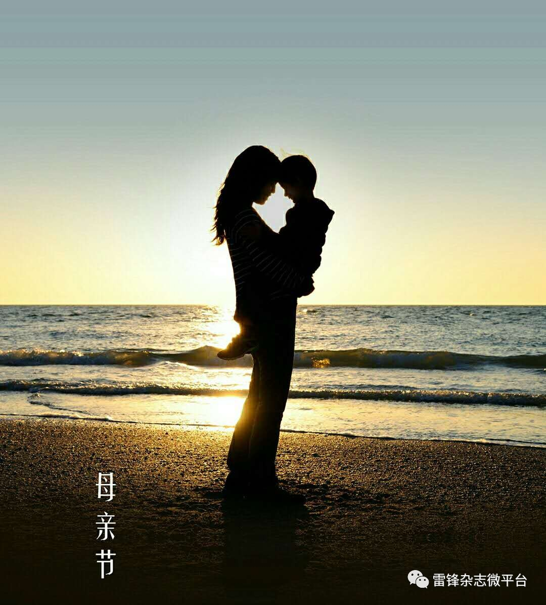

小时候，我们的城市像郊外，我们的脚步很轻快。当时天空很蓝，心很小，路很宽。长大后，我们的存在像尘埃，我们的距离被拉开，有时相处很难，想很多，话很短。这世上最亲切、动听的词语，大概就是——“母亲”。所有生命都是从母亲的温柔开始。
每年五月的第二个星期天是母亲节，这是一九一四年美国总统威尔逊郑重宣布的，美国政府同时规定：母亲节这天，家家户户都要悬挂国旗以示对母亲的尊敬。母亲节创立，得到了全世界各国人民的支持，母亲节已经成了一个名副其实的国际性节日。这一天母亲们通常会收到礼物，康乃馨被视为献给母亲的花，而中国的母亲花是萱草花，又叫忘忧草。
其实在中国也有很多中国母亲感天动地的故事。相传很久以前，熊岳城郊是一片海滩。海边有一户贫苦人家，只有母子二人，相依为命。母亲为了供儿子读书辛苦劳作，儿子决心苦学成才报答母恩。然后儿子乘海船赴京赶考。许多年过去了，一直没有儿子的音讯。母亲很着急了，就天天到海边眺望。一年，两年，三年……母亲的头发都花白了，却不见儿子的身影。母亲一次又一次地对着大海呼唤：“孩子呀，回来吧！娘想你，想你呀……”年迈的母亲倒下了，化成了一尊石像，也没有盼到儿子归来。
其实，他的儿子早在赴京赶考的途中，不幸翻船落海身亡了。上天被伟大的母爱感动了，在母亲伫立盼儿的地方，兀地矗立起一座高山；大地被伟大的母爱感动了，让母亲洒下的泪珠，化作了一股股地下温泉，滋润出无数红艳艳的苹果；乡亲们被伟大的母爱感动了，把那拔地而起的独秀峰叫做“望儿山”，在山顶建了慈母塔，在山下修了慈母馆，好让子孙后代缅怀母亲的平凡而伟大的恩情。
在香港中文大学微情书大赛上，有这么一封情书，它不是写给爱人的天长地久，但它却感动了所有的人，“瀑布的水逆流而上，蒲公英种子从远处飘回，聚成伞的模样，太阳从西边升起，落向东方。子弹退回枪膛，运动员回到起跑线上，我交回录取通知书，忘了十年寒窗。厨房里飘来饭菜的香，你把我的卷子签好名字，关掉电视，帮我把书包背上。你还在我身旁。”如果可以，我们都愿意回到起点，让那时光变慢，让你不要变老……
古人云：“若随顺慈母之教而无违者，诸天护念之，福德无尽。若有善男子善女人，为欲报母恩，一劫之间，每日三时，割自身肉，以养父母，亦未能报一日之恩。”小时候，每当哭泣时就会喊：妈妈，妈妈……长大了，每当在家找不到东西时还会说：妈妈，东西放在哪里啊？无论何时何地，妈妈都是我们最温暖，也是最坚强的依靠。风轻轻吹过发丝缓缓起舞，勾起一点一滴的回忆。回家的时候，轻轻地问候一句母亲，轻轻地说一句辛苦了。爱，不需要表达，行动足以证明。

越是平淡，就越是珍贵，但也越是容易忽视，如阳光，如空气。母爱似光，虽无实体，却有温度，似阳光般温暖你的世界；母爱如气，纵使天涯，哪怕海角，如空气般紧绕你的身旁。树欲静而风不止，子欲养而亲不待。钱是挣不完的，孝顺是不能等的。趁父母健在，多点关爱莫留遗憾！其实他们想要的很简单，一通电话、一句问候、一顿晚餐……母亲节将至，别让你的爱再等待！